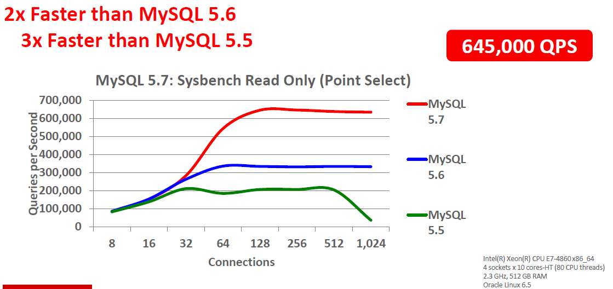

MySQL
MySQL是國際上最知名並且受到廣泛歡迎與使用的開源資料庫，其不論在網路基礎上或者內嵌DB應用上的成本效益、可靠性、高效能以及可擴充性上都是國內外各領域企業的首選。隨著雲端計算與大數據等技術興起，未來資料庫將成為各領域企業必爭並且是提升競爭力不可或缺的一環，MySQL以其本身既有的各項優勢與業界各領域穩定的使用者，漸漸地佔有舉足輕重的地位，並且持續更新技術，讓使用企業具備最紮實的資料庫能量，成為企業上雲端的基礎架構、投入大資料分析行列的必備利器!!
-
最全面且持續更新的優質服務
MySQL在2009年Oracle的投入之後，獲得世界級的支援與訓練資源，使得MySQL的技術團隊大幅成長為過去的兩倍，於功能與品質都達到了最佳的狀態!!並且於近年陸續推出Oracle MySQL的產品，為企業的資料庫搭起連接未來趨勢的堅固橋樑!!。
圖1 近年來MySQL發布版本與更新內容 -
完善不隨便的專業內容
MySQL 提供了不同版本的版本，提供給不同需求的使用者來選擇，其內容包含了備份、高可用性、擴充插件、安全性驗證模組、稽核插件、加密資料功能、內建防火牆保護等功能，更強調為可靠、高效並且可調整的整合式資料庫，高友善度與易於上手的工具，都成為開發人員與DBA建置管理上的好幫手。
圖2 (MySQL 資料庫核心價值) -
最具競爭力的投資
MySQL提供了企業版等不同類型的版本供您做最適當的選擇，此外更支持全球29種語言、支援熱修復與維護性發行。提供24x7x365的全天候不限服務次數與顧問諮詢服務。與其他傳統SQL Server比較更節省了近90%的成本。
圖3 (MySQL與其他SQL的TCO比較)開源資料庫的優勢除了在於成本外，開放的資源與相關資訊也是一大重點，但是在這樣前提下，開源資料庫還能保有大家所需要的資料庫功能以及優質穩定的效能呈現嗎?市占率最高的開源資料庫Oracle MySQL，其分別擁有數種不同用途與內容的版本可供選擇，包含Classic Edition, Standard Edition, Enterprise Edition以及Cluster Edition等，不僅僅提供完善的資料庫功能，更依照客戶的規模與需求進行設計，為目前市場上最能詮釋開源模式卻是擁有企業等級實戰功能的資料庫產品，而下列將就其相關功能與最新5.7版本資料庫功能做相關介紹。
-
企業級實用MySQL Enterprise Edition MySQL Enterprise Edition包含了最完整的資料庫功能，相較於一般資料庫又兼具最好的成本效益，目前是許多電子商務與線上交易應用的資料庫首選。
MySQL備份
是針對所有InnoDB資料執行完整的備份、增量備份以及部分備份時，資料庫皆不會受到影響，同時支援壓縮選向來降低資料大小，復原上則支援完整復原以及精確的時間點復原等。
高可用性功能
MySQL提供包含MySQL Replication及含高可用性的程式，含DRDB的Oracle Linux, Oracle VM的模板與適用於Windows的容錯移轉叢集以及Solaris Clustering。
Enterprise Monitor/Analyzer/Workbench
Enterprise Monitor/Analyzer/
Workbench除了上述基本功能外，MySQL還提供了不同的視覺化監控分析功能，可以讓使用者輕鬆簡易的了解資料庫狀態。並且提供偏差時的告警與趨勢分析，藉此供相關人員參考進而達到產能需求上的決策參考使用。
圖4 (提供效能可視化的Enterprise Monitor功能) -
因應大量資料而生的MySQL Cluster Edition
MySQL Cluster是一種交易型資料庫，除了具有高延展性與靈活度外，還兼具了99.999%的可用性，其分散式架構可以排除單點failure的可能性外更可以運用在一般商用硬體進行水平式的規模擴充。 MySQL Cluster資料表可存在一般商用伺服器的節點間並且進行自動分派作業。讓資料可以水平擴充外還可以線上新增節點或以SQL直接以NoSQL API進行資料存取立即調整資料庫效能來應用大量資料。
此外其資料表自動分區功能將可以不必在AP應用程式層進行資料表分區已簡化開發與維護作業，加上符合ACID規則將可以確保資料表之間的完整性。
圖5 (MySQL Cluster彈性架構設計，具備99.999%的可用性與自我修復能力) -
性能大躍進的最新5.7版本
MySQL在2015年推出了最新的5.7版本，其在性能面、擴展性能上以及管理性上都大幅的提升。其性能比MySQL5.6快了兩倍，並同時增強InnoDB的功能提升了網路與大容量的載入操作。此外也提供了包含優化器的查詢計畫成本模型、Performance Schema的優化與安全行的增強，且同時新增可支援JSON的功能。
 圖6 (MySQL 5.7在Sysbence Read Only/InnoDB與Memcached/Connections per second與其他版本的比較) -
優化器與分析器的精進重構
5.7版本能夠有優異的表現最重要的因素在於優化器與分析器上進行了提昇與精進，不僅提高了可讀性與穩定性，更可以減少風險。其主要是透過由下而上的內部解析結構與User Context的Abstract Syntax進行連結，可以用更接近SQL語法的方式來解析，於Hint和JSON Explain上也提供更優化的功能，整體而言在更少的CPU和磁碟空間上提供更快的查詢。
圖7 (MySQL Optimizer) 圖8 (不同版本MySQL Optimizer比較 )